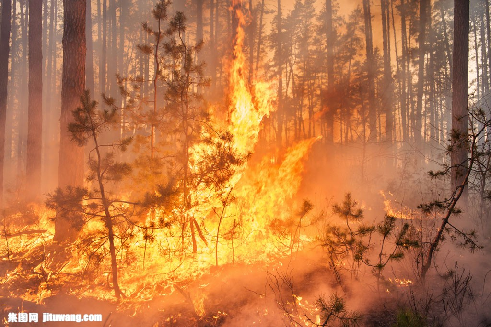
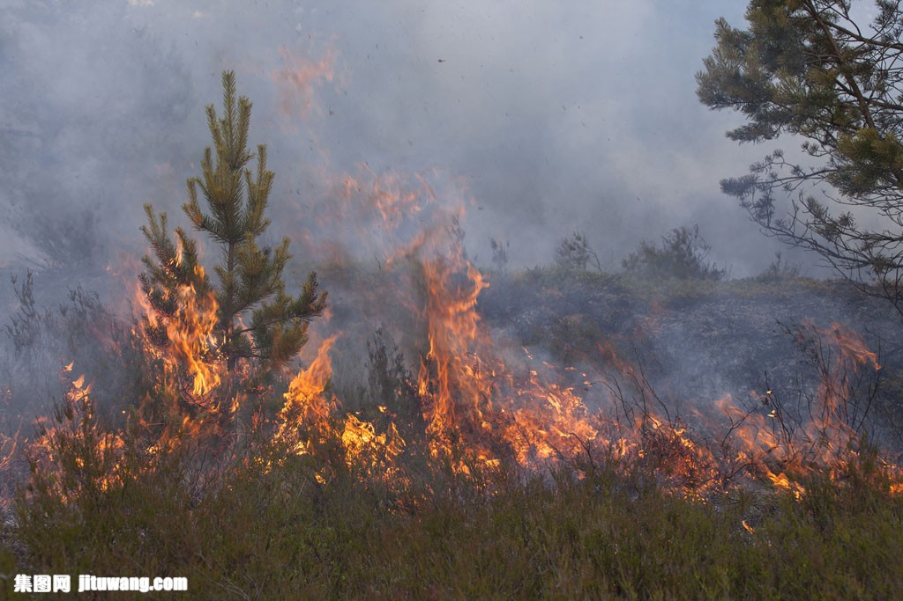
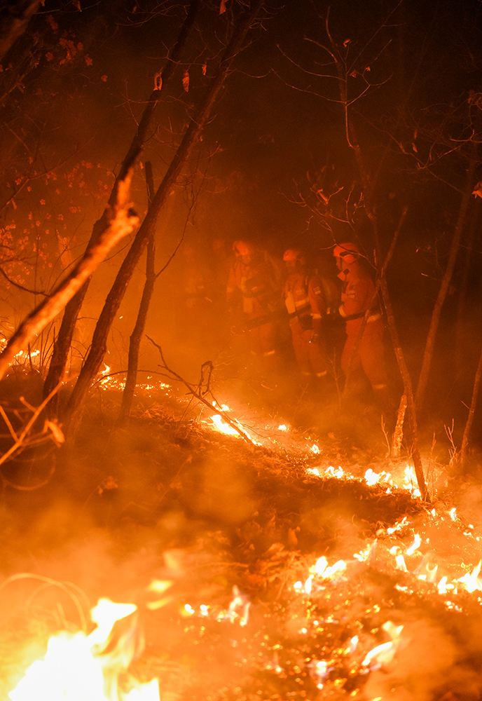
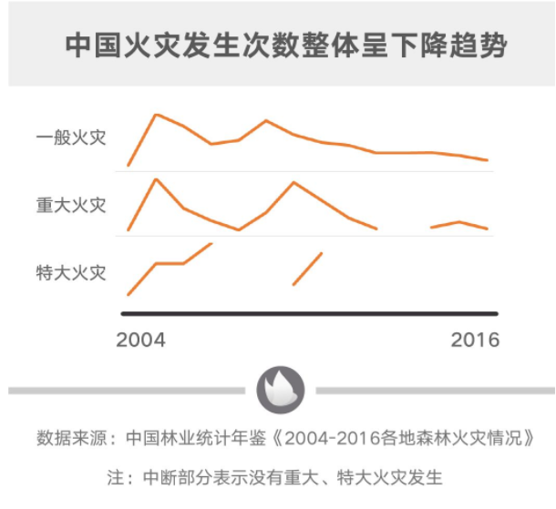
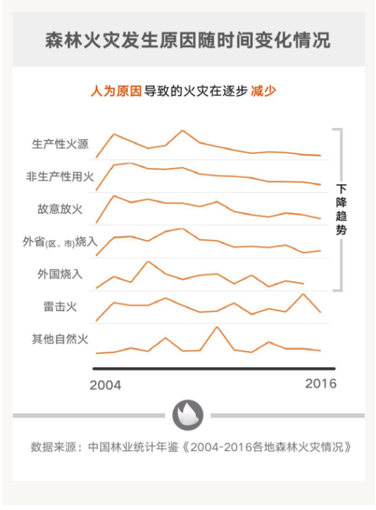

服务范围
our severives
-
1.火灾数据
近年发生火灾最频繁的地区，发生多发时段
-

2.火灾原因及损失
对今年来发生火灾原因分析数据分析
-
3.抢救火灾所需要的物资
火灾抢险必需品
-
4.火灾防范意见
提高大众防火意识，进行防火宣传
{火灾现场}
With the best professional technology, to design the best innovative web site
- 
- 
- 
VIEW MORE
最新资讯
TEH LATEST NEWS
- 09 Jan
-
近代以来我国最早的一次森林火灾
987年21135月6日，黑龙江省大兴安岭地区的西林吉5261、图强、阿尔木和塔河4个林业局所4102属的几处林场，1653同时起火，引起建国以来最严重的一次特大森林火灾。据初步统计，过火面积达101万公顷，其中有林面积近70％。烧毁房舍61.4万平方米。内含居民住房40万平方米，贮木场4处半，林场9处，存材85.5万立方米，烧毁各种设备2488台，粮食650万斤。
- 08 Jan
-
最近的一次森林大火
3月30日，四川省凉山州木里县境内发生森林火灾。 3月31日下午，扑火人员在转场途中，受瞬间风力风向突变影响，突遇山火爆燃。 截至4月1日18时30分，经全力搜救，30名在扑火中遇难人员遗体已全部找到。 凉山的森林大火吞噬了27名消防员和3名扑火人员的生命。这是自去年国家应急管理部成立以来 ，应急救援人员伤亡最多的一次。
- 07 Jan
-
目前森林大火总体数据
1950年以来，我国年均发2113生森林火灾13067起，受害森5261林面积653019公顷，因灾伤亡4102580人。其中1988年以1653前，全国年均发生森林火灾15932起，受害森林面积947238公顷，因灾伤亡788人（其中受伤678人，死亡110人）。1988年以后，全国年均...
- 06 Jan
-
森林防火意识
森林防火工作是我国防灾减灾工作的重要组成部分，是国家公共应急体系建设的重要内容。据了解，为切实做好森林防火工作，我市建立了直升机辅助灭火机制，在市委、市政府的部署下，南海第一救助飞行队救助直升机加入我市森林火情抢险扑救工作。

中国火灾次数整体趋势

森林火灾原始随时间变化